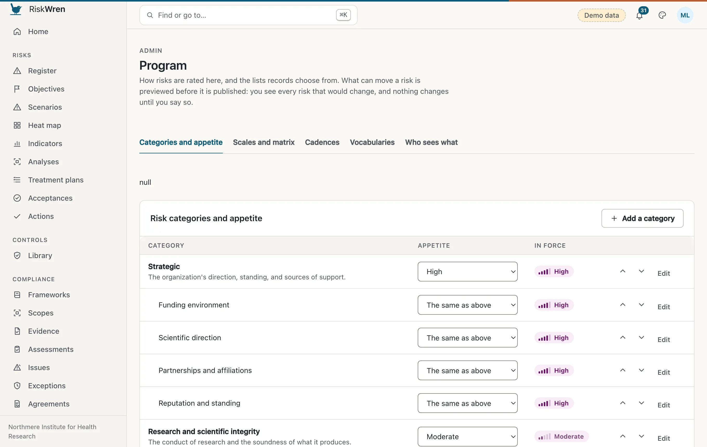
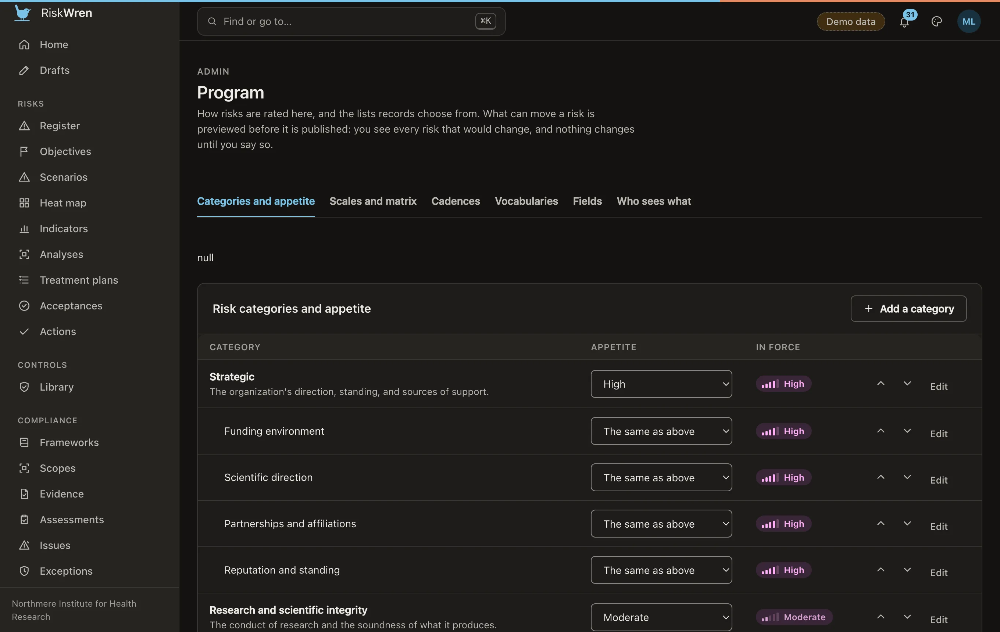
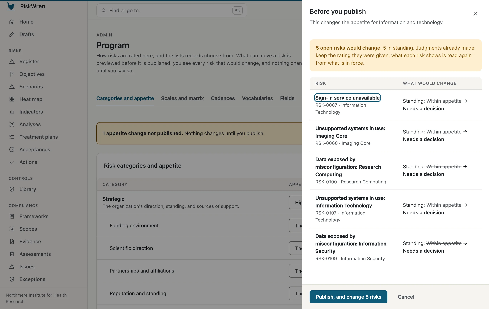
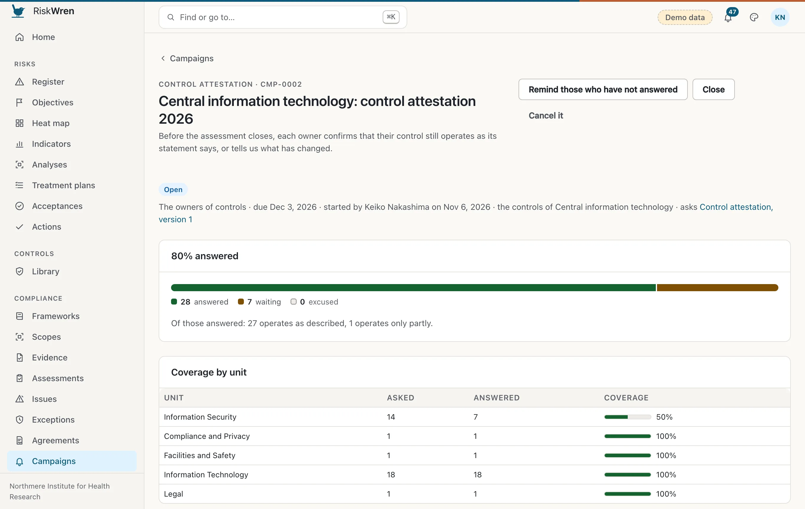
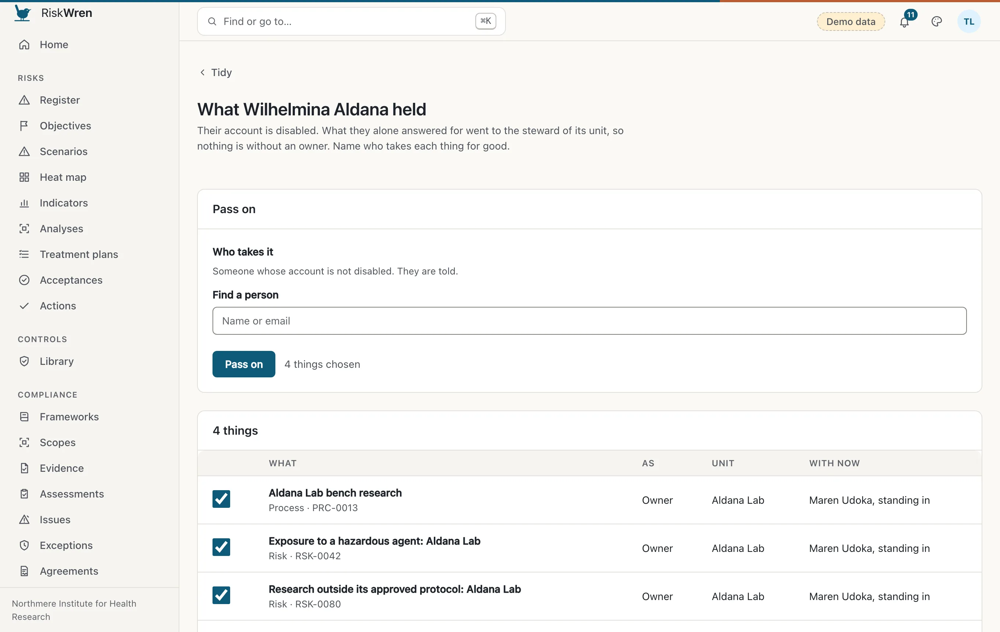
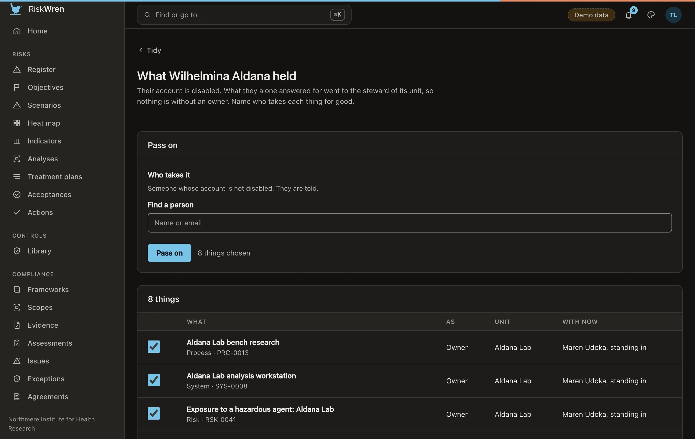
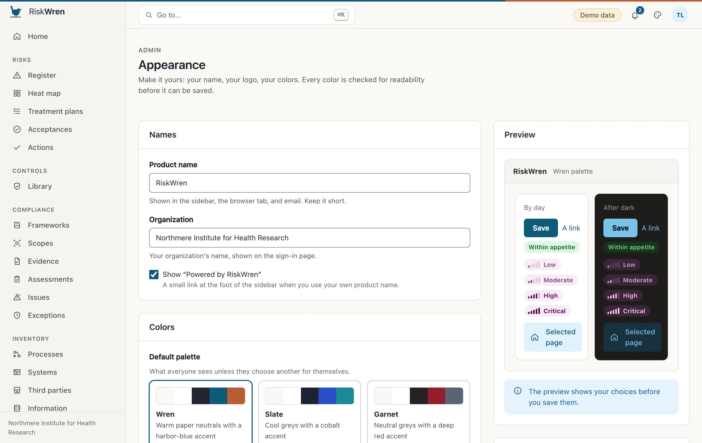
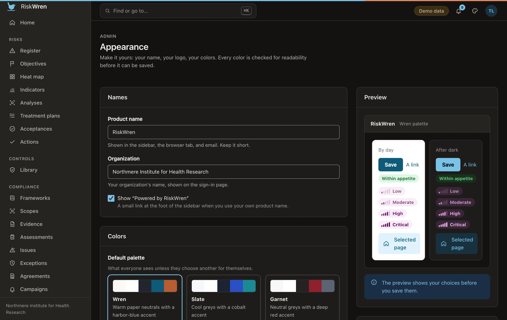

Running the program
This guide is for the risk, compliance, and security assurance team and for administrators. It covers roles and scope, who sees what, shaping the program, the dashboards, the history, and appearance.
Two kinds of authority#
RiskWren keeps administration and judgment apart.
- An administrator manages accounts, units, appearance, and system settings. That role reads the register and can set the program's rules, since it sets everything else up. It does not assess, rate, or accept.
- A manager runs the program: shapes the categories, appetite, and scoring method, edits any record, and reads everything. A manager does not accept risk either. Acceptance belongs to leaders.
Someone who does both jobs holds both roles, and the history shows which they acted under.
Roles and scope#
Four roles can be limited to a unit, and then cover that unit and everything beneath it: manager, assessor, leader, and steward. A manager or assessor with no unit covers the whole organization, and only a manager for the whole organization shapes the program.
| Capability | Member | Owner | Steward | Leader | Assessor | Manager | Auditor | Admin |
|---|---|---|---|---|---|---|---|---|
| See what is assigned to them; finish their actions | ✓ | ✓ | ✓ | ✓ | ✓ | ✓ | ✓ | ✓ |
| Read the inventory | ✓ | ✓ | ✓ | ✓ | ✓ | ✓ | ✓ | ✓ |
| Read risks and controls | by setting | ✓ | in scope | in scope | in scope | ✓ | ✓ | ✓ |
| Add a record to a unit | ✓ | ✓ | ||||||
| Edit a record; link and unlink | ✓ | ✓ | ✓ | |||||
| Assess a risk; rate a control | ✓ | ✓ | ✓ | ✓ | ||||
| Record a response; run a treatment plan | ✓ | ✓ | ✓ | |||||
| Accept a risk | ✓ not their own, up to their limit | |||||||
| Escalate a risk | ✓ | ✓ | ✓ | ✓ | ||||
| Map a control to requirements | ✓ | ✓ | ✓ | |||||
| Add a scope; say what applies in it and how each control is done there | ✓ | ✓ | ✓ | |||||
| Add evidence for a unit they work in | ✓ | ✓ | ✓ | ✓ | ✓ | ✓ | ||
| Attach evidence to a control or a scope | ✓ | ✓ | ✓ | ✓ | ||||
| Start an assessment; plan its tests | ✓ | ✓ | ||||||
| Record a test result, or confirm one | ✓ not their own control or result | ✓ not their own control or result | ||||||
| Raise an issue for a unit they work in | ✓ | ✓ | ✓ | ✓ | ✓ | ✓ | ||
| Work on an issue: actions, its date, proposing closure | ✓ | ✓ | ✓ | |||||
| Confirm an issue's closure; withdraw or reopen one | ✓ not their own | ✓ not their own | ||||||
| Ask for an exception | ✓ of the scope or control | ✓ | ✓ | |||||
| Decide an exception | ✓ not their own request | ✓ not their own request | ||||||
| Export a list they can see | ✓ | ✓ | ✓ | ✓ | ✓ | ✓ | ✓ | ✓ |
| Import records from a spreadsheet | ✓ | ✓ | ||||||
| Read the full history | ✓ | ✓ | ✓ | |||||
| Shape the program; keep the organization's own frameworks | ✓ | ✓ | ||||||
| Manage accounts, units, and appearance | ✓ |
Roles are given under Admin → People, or with riskwren users roles. The last active administrator can never be removed or disabled.
Who sees what#
The inventory is open. Processes, systems, third parties, and information assets are visible to everyone signed in, because a record can only be linked to what its author can see. So are frameworks and their requirements.
The register follows a setting. A register of risks and controls is useful in proportion to how widely it is read, and sensitive in proportion to how widely it is exposed. Admin → Program → Who sees the register sets what a person with no role sees:
| Setting | A member sees |
|---|---|
| Open | Every risk and control that is not restricted |
| Unit (the default) | The risks and controls of the units they belong to, and any they are named on |
| Assigned | Only the risks and controls they are named on |
Whatever the setting, leaders and stewards see their unit and everything beneath it, and managers, assessors, auditors, and administrators see what their role covers.
Any record can be marked restricted. It is then seen only by its owners, its unit's steward and leaders, managers, and auditors.
Evidence, issues, and exceptions are more closely held. Each is known to whoever made it, those named on it, and those with a role over its unit. Working in the unit is not enough.
- Evidence is also seen through something it is attached to that the person may see, unless it is restricted or of the most sensitive data class.
- An issue is also seen by anyone with an action on it.
- A control that a scope inherits is shown there by name and state to those who keep the scope, whoever may open the control itself.
One rule decides what a person may see, and every list, count, chart, and search uses it. A figure on the dashboard never counts a record its reader could not open.
One consequence is worth knowing. Under the default setting a steward cannot link their risk to a control that another unit runs, because they cannot see it. Controls that one unit runs for everyone, such as backups or training, are linked to other units' risks by a manager.
Shape the program#
Admin → Program is where the program is kept, by those who run it: managers for the whole organization, and administrators. It has five parts.
| Part | What is there |
|---|---|
| Categories and appetite | The kinds of risk, in a tree two deep, and how much of each the organization will live with |
| Scales and matrix | What each level of likelihood and impact means, the ratings, and the matrix that combines them |
| Cadences | How often risks are reviewed and key controls tested, how long a rating stands, how long an issue is given, and when reminders go |
| Vocabularies | The lists records choose from: kinds of system, data classes, root causes, and the rest |
| Who sees what | How much of the register a person with no role sees |




See what a change would do before you make it#
Three things can move a risk without anyone touching it: the matrix gives it its rating, appetite its standing, and the cadences its next review. A change to any of them is not made as you type. The page holds it as a draft, says so in a bar at the top, and Preview and publish shows every open risk that would change, with what would change about it:
- its inherent, residual, or target rating;
- its standing: a risk within appetite may now need a decision, or the other way about;
- when it is next reviewed.
Nothing has changed at that point. Publish makes the change, and changes exactly the risks listed. Cancel leaves everything as it was, draft included; Discard drops the draft.



What is published is recorded in the history, and each risk that moved says so in its own history, with the line that changed.
Categories#
Add a category at the top of the tree or beneath a category that is there. A category at the top needs an appetite of its own. Edit renames one, describes it, or retires it: a retired category is not offered to new risks, and risks already in it keep it. The arrows put categories in the order people will choose from.
Appetite#
Appetite is the highest residual rating the organization will live with for a kind of risk without a plan or an acceptance. It is set for each top category and can be set differently for any category beneath; one that sets none takes its parent's.
As shipped, clinical, regulatory, and financial risk have a low appetite, strategic risk a high one, and the rest moderate. Changing one is previewed first, because it changes which risks need a decision.
Scales and matrix#
Every word in the method can be changed: the name and meaning of each level of likelihood, the name of each level of impact, what each impact level means on each dimension, and the name and meaning of each rating. Each cell of the matrix is a choice of rating.
- A rating may not fall as likelihood or impact rises. A matrix that breaks this is refused, with the reason.
- Publishing makes a new version. Every open risk is read again from the matrix now in force, so the register always speaks one language. Each judgment already made keeps the rating it was given and the version it was made under: the assessments of a risk show what was decided at the time, and its history shows when the program moved it.
- The shape stays. The number of levels and the set of ratings are changed with a program pack, because appetite, acceptances, the review cadence, and people's limits all name the ratings. So is how much a control may reduce a rating.
Cadences#
| Cadence | As shipped |
|---|---|
| How often a risk is reviewed, by residual rating | Critical 3 months, high 6, moderate 12, low 24 |
| How soon a risk not yet rated is due | 3 months |
| How long a control's rating, a test result, and evidence hold | 12 months |
| How often a key control is tested | 6 months |
| The longest an exception may run | 12 months |
| How often a policy, standard, procedure, or guideline is reviewed | 12 months, unless the document sets its own |
| How long an issue is given, by severity | Critical 30 days, high 90, moderate 180, low 365 |
| Reminders | 14 days before; the steward 7 days late; the leader 21 days late |
A higher rating is never reviewed less often, and a more severe issue is never given longer. Changing how often risks are reviewed moves their review dates, so it is previewed. An issue already raised keeps the date it was given.
Vocabularies#
Choose a list, then rename its values, say what each means, put them in order, add one, or retire one.
- Records store a value's key, never its name, so renaming a value rewrites nothing. A new value's key is made from its name and never changes.
- A value in use is retired, not removed. Records that have it keep it; new records cannot choose it.
- Some lists can only be renamed. A severity sets a clock, a kind of link says what it joins, an owner kind decides who may edit. Their names, meanings, and order can be changed here; values are added or taken away with a program pack.
- A value new records start with cannot be retired, such as a system's lifecycle "in service".
Who may accept what#
The table on the Program page shows, for each rating, how often a risk is reviewed and who may accept it when it is above appetite:
| Residual rating | Reviewed every | May be accepted |
|---|---|---|
| Low | 24 months | No acceptance is needed |
| Moderate | 12 months | For up to 24 months, by a leader of the unit or above |
| High | 6 months | For up to 12 months, by a leader whose limit reaches high |
| Critical | 3 months | For up to 6 months, by a leader whose limit reaches critical |
A leader's limit is set with the role. A sensible start: unit leaders at moderate, division leaders at high, and one or two executives at critical.
Change the program with a pack#
The scoring method, cadences, the acceptance table, and the vocabularies (kinds of system, data classes, owner kinds, and so on) are held as one document, a program pack.
uv run riskwren program export --output program.json # write the one in force
uv run riskwren program import program.json --dry-run # check an edited one
uv run riskwren program import program.json # load itAn import checks the whole pack first and reports every problem together. A scoring method in which a rating falls as likelihood or impact rises is refused. A changed method becomes a new version: assessments already made keep the version they were made under, and every open risk is read again from what was loaded, as it is when a change is published in the app.
A pack is the way to change what the Program page does not: who may accept what, the number of levels and ratings, and how much a control may reduce a rating.
A pack is also how one installation's program is copied to another, and how a program is kept under version control.
Questionnaires#
A questionnaire is a set of questions RiskWren asks people: to attest that a control still operates, to look again at a risk they own, to confirm that a unit's records are complete. Admin → Questionnaires lists them. Anyone signed in can read one and try it; those who run the program change them.
A new installation has four, written for RiskWren:
| Questionnaire | Asks |
|---|---|
| Control attestation | A control's owner: does it still operate as described, is there evidence in date, and are you still the right person to answer for it? |
| Risk self-assessment | A risk's owner: does it still stand, what has changed, and are its rating and plan still right? |
| Unit completeness check | A unit's steward: is everything the unit has on record, with the right owners, and is anything worrying not in the register? |
| System security profile | Whoever runs a system: what it holds, who can reach it, how people sign in, and who patches, backs up, and watches it |
Questions that appear by condition#
A question, or a whole section, can be asked only when an earlier answer makes it relevant. "What is different from the statement?" is asked only of someone who said the control operates partly or not at all. So nobody answers what does not apply to them, and what is asked is short.
- A rule looks only at questions asked before it, so showing and hiding can never run in a circle.
- An answer to a question that an earlier answer has since hidden is dropped. It cannot go on deciding what else is asked.
- The form reacts as it is filled in, and the server decides again when the answers are sent. The two use the same rules, held together by one file of test cases.
Versions#
Edit changes a questionnaire's sections, questions, their kinds and options, and when each is asked, with the form as it will be asked shown beneath. Saving changed questions publishes a new version. Earlier versions are never altered.
- An answer is read against the version it was given to. Reword a question or remove one, and what people answered before still reads as it was asked then.
- A draft begun under one version is finished under that version.
- A built-in questionnaire you have edited is yours from then on, and a later release leaves it alone. One you have not touched is brought up to date, as a new version.
- Versions lists every one, with who published it and what they said had changed. Retiring a questionnaire stops new answers and keeps the old.
The Try it tab asks the questions and shows how the answers would be kept, without saving anything.
Campaigns#
A campaign asks a set of people for one thing by a date, and shows who has answered. Compliance → Campaigns → Start a campaign (an assessor or a manager, for the units they cover).
| Campaign | Asks | For |
|---|---|---|
| Control attestation | The owners of controls | Does each control still operate as described, is its evidence in date, and are you still the right owner? |
| Risk self-assessment | The owners of risks | Does each risk still stand, what has changed, and are its rating and plan still right? |
| Unit completeness check | The stewards of units | Is everything the unit has on record, with the right owners? |
| System security profile | The owners of systems | What each system holds, who can reach it, and who patches, backs up, and watches it |
| Evidence request | The owners of controls | A named piece of evidence for each control |
| Acknowledgment | The people a document applies to | Read the version in force, and say they have |
Choose what to ask, give it a name and a date, and say what it is about: everything in a unit and beneath it, or, for controls, only those a compliance scope uses. Before it starts, the form says how many people would be asked about how many things. Each person is told once, with a count, and finds each thing on their Home.
- Everyone is asked the same version of the questionnaire, the one in use when the campaign started. Changing the questionnaire later does not change a campaign under way.
- Any owner of a control, risk, or system may answer for it, not only the one who was asked. An answer can be saved and finished later.
- Something with nobody to ask is still listed, and shown as such, so that a control whose only owner has left does not pass unnoticed. Name an owner, or excuse it with a reason.
- An evidence request closes by itself when evidence collected since the request is attached to the control.
- An acknowledgment campaign is answered in the library, by acknowledging the document. Those who already have are counted as answered when it starts (Policies).
Following one#
A campaign's page shows how far it has got, what those who answered said, coverage by unit with the least covered first, and every item with who was asked. Each figure is the count of the list beneath it.



- Remind tells everyone who still owes something, once, with how many. The scheduled reminders do the same as the date approaches, and tell a unit's steward and then its leader about what stays unanswered.
- Close ends a campaign and keeps what was answered. Cancel it is for one started in error.
What an answer sets in motion#
Answers are kept as given, and some need someone else to act. Those people are told.
| Answer | Who is told |
|---|---|
| A control only partly operates, or does not | The unit's assessors, managers, and stewards |
| Someone else should own this control | The unit's stewards |
| A risk no longer stands, or its rating is no longer right | The unit's stewards, assessors, and managers |
| A unit's records need attention | The assessors and managers who cover it |
An attestation is recorded on the control, with who said it and when. It is never a test: see An attestation is not a test.
Committee sessions#
Reports → Committee sessions holds the meetings of the risk and compliance committees. A unit's leaders, or a manager, plan one: its committee, the day it meets, and the unit it answers to. Whoever plans it is its owner, and sees it on Home in the fortnight before it meets.
- The agenda is drawn from the register: a risk, an issue, an exception, a control, a document, an agreement, a scope, an objective, or an assessment, each with what the committee is asked; or a topic of its own. Items are put in order, and taken off until something is decided about them.
- A decision is recorded on each item: noted, approved, declined, or deferred, with what was decided. It shows on the record it was about, under Committee decisions, and that record's owners are told. A decided item stays on the agenda, and a session where anything was decided cannot be cancelled.
- The minutes say who was present and what else was said, in the same simple Markdown as documents. The decisions are not repeated there: they are kept with their items.


The register's records and their sessions are joined both ways in the Connections picture, and the list of sessions can be cut to those that discussed a record.
When someone leaves#
Disable the account under Admin → People, or with riskwren users disable. The person is signed out and cannot sign in. Everything they did stays in the history under their name.
Nothing they answered for is left without an owner:
- What they alone owned passes at once to the steward of its unit; where the unit and the units above it have no steward, to its leader; failing that to someone who runs the program; and failing that to the administrator who disabled the account. This covers records of every kind, open actions, treatment plans, and what open campaigns were waiting on them for.
- Whoever it passes to is told, with a count, and has Name who takes what they held on Home until it is done.
- What they shared with someone else is left as it is: the other owner still answers for it.
The stand-in is a holding place, not a decision. Reports → Tidy → From people who have left lists each person with things still to pass on, and their page lists every one with who has it now. Choose who takes it and Pass on: everything ticked changes hands in one step, the new owner is told, and the stand-in is released. A stand-in who should keep something passes it to themselves.




An administrator can pass on anything. A steward or a manager can pass on what belongs to their own units. The same page works for someone who has not left: Admin → People, the person, What they hold. Use it to move what a person holds when they change jobs.
Letting a person sign in again does not give anything back. Accounts disabled before version 0.3.0 were not covered this way: what they alone owned shows on Home as needing an owner, and under Tidy as missing an owner who can sign in.
Reminders#
Everything with a date reminds whoever it is waiting on: actions, risk reviews, issues, evidence, acceptances, exceptions, the next test of each control, what a campaign has asked, the next reading of each indicator, document reviews, and agreements.
| When | Who is told |
|---|---|
| 14 days before the date | Whoever it is waiting on |
| The day after the date | The same people, as overdue. An overdue test also goes to the assessors, because an owner cannot test their own control |
| Still late after 7 days | The steward of the unit |
| Still late after 21 days | The unit's leader |
- Each of these is said once for a given date. Moving the date starts again.
- An agreement is told of further ahead: 30 days before the last day to give notice, and 60 days before it ends, because a renewal takes longer to arrange than an action takes to finish (Agreements).
- Actions, issues, and what a campaign has asked go up to the steward and the leader. An indicator's reading is reminded only as it falls due, not two weeks ahead. The rest are for their owners: nobody else can renew a person's evidence or review their risk for them.
- Something found already long overdue, as on the first day after an upgrade, is told once to whoever it has reached, and not to everyone below as well.
- A reminder is a notice. It is read under the bell, and sent by email where email is set up.
The three periods are part of the program's cadences, with the others. Admin → Scheduled work shows them as they are set.
Key controls and the next test#
What is known about a control holds for twelve months. A control marked key is due to be tested again after six. Each control's page shows the date its next test is due, and its owners are reminded as it approaches. Marking a control key does not change what its last rating counts for; it brings the next test forward.
Read the dashboards#
There are two, each for the whole organization or for one unit and everything beneath it. Reports → Compliance shows how ready each scope is against what it is held to and what stands in the way; it is described in The compliance dashboard. Reports → Risk shows where the register stands:
| Figure | Counts |
|---|---|
| Open risks | Risks that are not closed |
| Above appetite | Open risks whose residual rating exceeds the appetite for their category |
| Need a decision | Those above appetite with neither a plan on time nor an acceptance in force |
| Reviews overdue | Open risks past their next review date |
| Ratings in doubt | Risks flagged because what is known about their controls got worse |
| Actions overdue | Open actions past their due date |
Below them are the residual matrix, the highest risks, the register by standing, by rating, by category, and by unit, and what is known about the controls: how many are effective, partly effective, not assessed, or rated too long ago to rely on.


On both, every figure is the count of a list, and opens that list with the same filters. A dashboard has no numbers of its own, so a figure and the records behind it cannot disagree.
The calendar is caught up every hour by scheduled work: when an acceptance expires or a plan runs late, the risk's standing is updated, and the history records that as done by the system. Reading the register catches it up as well, so a figure is never behind the date even where the scheduler is turned off.
The history#
Every change to every record is written to an append-only history in the same transaction as the change: who, when, and each value before and after. Each event is hashed together with the one before it, and the database itself refuses updates and deletes on the history.
- Each record's History tab shows its own events in plain words.
- Reports → History shows every change in one place, for managers, auditors, and administrators: narrowed to a person, a record, a kind of record, or a span of dates. It opens on changes to records; sign-ins, exports, and settings are one choice away.
- Reading is recorded where it matters: every download of an evidence file and every export of a list is an event, with who and what.
uv run riskwren verifyrecomputes the chain and reports the first event that has been altered, removed, or cut from the end.uv run riskwren doctorchecks that the database still refuses changes to the history.


Assessments, control ratings, test results, and acceptances are never edited. A new one supersedes the last, and all of them are kept.
Appearance#
Admin → Appearance makes the product yours, with a live preview:
- the product's name and your organization's name;
- a logo for light and for dark mode, and a tab icon;
- the default palette (Wren, Slate, or Garnet) and an accent color, which is adjusted for dark mode and refused if text on it could not be read;
- how ratings are colored: an ordinal ramp from light to dark in one hue, which keeps rating apart from the colors of standing, or a signal ramp from green to red.
Each person chooses light, dark, or system mode and a palette for themselves, from the appearance button at the top right.




Back up and recover#
- Back up the data home, and the database as well if you use PostgreSQL. Evidence files are in the data home under
files/, and the database refers to them. uv run riskwren program exportkeeps a copy of the program you have shaped.- If nobody can sign in,
riskwren usersadds an administrator or resets a password from the server's own command line. Changes made there are recorded in the history as made at the command line.